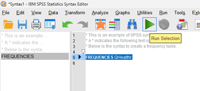
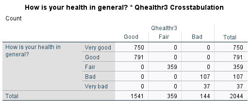

Examining part-time workers
Exercises developed by Jen Buckley
Use data to explore the following questions:
Do part-time workers have better heath? Does this vary by gender?
Do part-time workers have higher satisfaction with their work-life balance?
Learning outcomes
The learning outcomes of this section are:
Aware of SPSS syntax and can run commands via a syntax file.
Understand how to produce cross-tabulations with chi-square test and interpret the output.
Understand how to compare means between groups and do a t-test.
Syntax
Before we do our analysis, we are going to simplify one of the variables. To do that we are going to use SPSS syntax (code) to create a new variable.
SPSS can be used via menus or by writing and running code (called SPSS syntax). To use SPSS syntax, you need to open a Syntax file. Syntax files can include code and comments that allow to understand the code.
- Open a syntax file: FILE > New >Syntax.
Copy the code below into the your sytax file in the syntax editor. Then, highlight the code and press the green arrow.
* This is an example of SPSS syntax.
* A * indicates the following text is a comment.
* Below is the syntax to create a frequency table.
FREQUENCIES QHealthr.
Recode a variable
The variable QHealthr has five categories (Very good, Good, Fair, Bad, Very bad), some categories have few cases, most notably Very bad only has 37. We are going to simplify the variable so that it has three categories only: Good, Fair and Bad.
Add the following code to your syntax file (or make a new one if you need to) then run the code. To run the code, highlight the code you want to run and press the green arrow.
*Recode self-rated heath to a three category variable.
Recode QHealthr (1, 2 =1) (3=2) (4, 5=3) (ELSE =copy) into Qhealthr3.
Value labels Qhealthr3
1 'Good'
2 'Fair'
3 'Bad'.
MISSING VALUES Qhealthr3 (98, 99).
CROSSTABS Qhealthr by Qhealthr3. You should end up with a table like below.

If someone has Very bad health on the variable in the rows, what category do they belong to on the variable in the columns (Qhealtr3)?
Is this what we should expect?
Bad
Yes, the new variable combines bad and very bad into one category.
Comparing the health of part-time and full-time workers
Create a crosstabulation with a chi-square test examining self-rated health and the variable indicating if someone is working full or part time. The variables are: FtPtWrk and QHealthr3 – the new variable.
- Analyse > descriptive statistics > crosstab
Which variable in the rows and which in the columns?
It doesn’t really matter; the numbers will be the same. However, row and column percentages depend on which variable is in the rows and which in the columns.
Often, we put the dependent variable in the rows and the explanatory variable in the columns and calculate column percentages. This approach means we can compare the distribution of cases across categories of the dependent variable for each category on our independent variable.
FtPtWrkin the columns andQHealthr3in the rowsCells > column percentages > continue
Statistics> Chi-square test > continue
OK
- Based on the results, what can we conclude about overall differences in health between part-time and full-time workers?
- There are small differences in the percentages – for example 85 percent of full-time workers indicate having good health compared to 81 percent of part-time workers but the association is not statistically significant (chi-square 4.321, 2 d.f. p=0.115).
What about gender?
From exercise 3, we found that there were some differences between male and female part-time workers. To investigate this further, we are going to consider gender too. Repeat the crosstabs above and
- Add
RSEXas a Layer
Consider the results.
- What can we conclude about overall differences in health between part-time and full-time workers for each gender?
- Among men, there is significant association between being a part-time worker and self-rated health, which less good health indicated by men working part-time then full-time. There is not an association between part-time work and self-rated health among women.
Part-time work and satisfaction with work-life balance
It is plausible that part-time workers feel better about their work-life balance than full-time workers.
In our data, satisfaction with work-life balance is measured by the variable MCZ_13. One way we can examine this idea using data is to compare averages for part-time workers to the average for full-time workers.
Let’s examine if this is true by comparing the means and doing a t-test.
- Analyse > Compare Means > Independent sample t-test
In the box,
Add
MCZ_13to the Test Variable listFtPtWkrto Grouping VariableClick Define groups – for Group 1 put in 1 and Group 2 put in 2 > continue
Press OK
Look at the first table and examine the means.
What are the means for those working full-time and those working part-time? Which group is more satisfied with their work-life balance?
Those working full-time has a lower average score 6.54 than those working part-time 7.70
Now consider the results of the t-test.
Refer to the SPSS output in the table labelled Independent Samples Test. The table includes results for two t-tests, one with:
‘Equal variances assumed’ - in the top row.
‘Equal Variances not assumed’ - in the bottom row.
Which do you use? Levene’s Test for Equality of Variances is designed to tell whether we can assume equal variances or not. The results are included in the first two columns containing data.
A result of p<0.05 would mean it is very unlikely that variances are equal between the two groups, and therefore it is wise to use the results when ‘Equal variances are not assumed’. Conversely, if p is not p<0.05, we can consider “Equal variances assumed”.
Identify the columns t, df and Sig. (2-tailed) – these are the t-test results.
According to the T-test, are the differences between part-time workers and full-time workers statistically significant?
According to the T-test, the difference between part-time workers and full-time workers is statistically significant (t=-8.243, p<0.001).
Independent task
Choose one of the following to examine:
How does self-rated health vary between managers, those in intermediate roles and those in routine and manual positions (
NSECAC3).Are part-time workers less satisfied with their financial situation (
MCZ_10)?